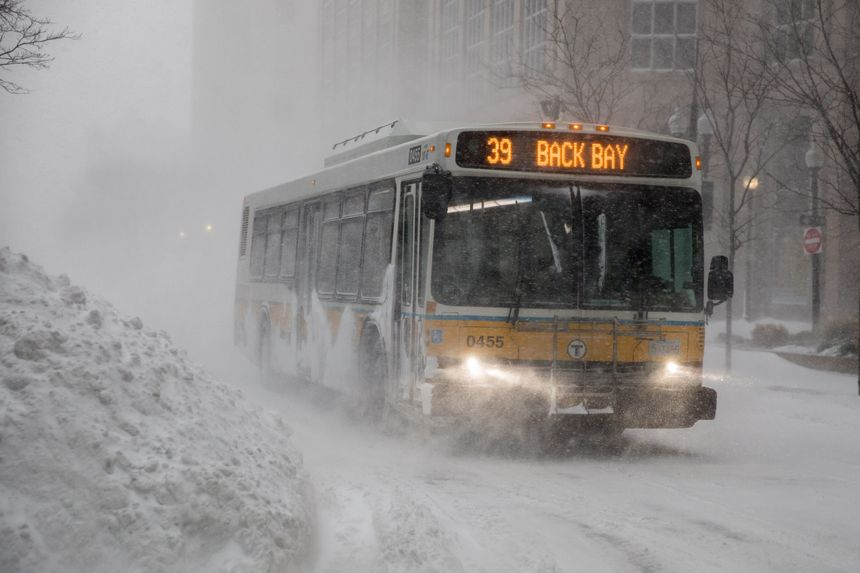
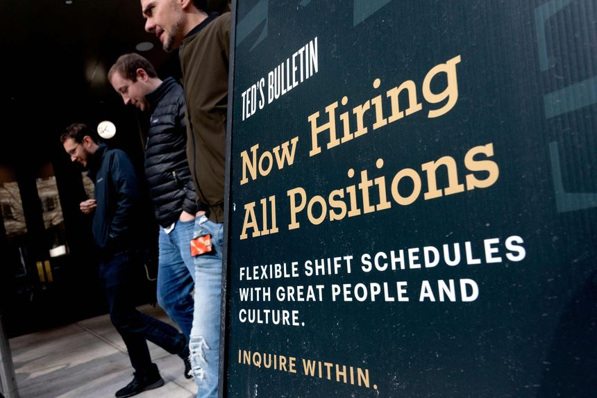

| 时间 | 分类 | 标题 | 副标题 | 正文 | 图片 |
|---|---|---|---|---|---|
| 2022-03-28 12:01:00 | Life & Work | Their Secret for Workplace Zen? Landlines and Ethernet Cords | ‘I’m sitting down and I’m plugging in.’ Workers, sick of dropped calls and spotty Wi-Fi, revert to early 2000s technology. | ||
| 2022-03-27 21:36:00 | World | Biden’s Remark on Putin Stirs Anxiety Among Western Allies | President Biden’s remark that Vladimir Putin ‘cannot remain in power’ marks escalation in verbal attacks on Russian president | WASHINGTON—President Biden’s remark that Russian President Vladimir Putin “cannot remain in power” came under fire for muddying U.S. policy and threatening to undermine diplomatic efforts to end the war in Ukraine. Administration officials and Democratic lawmakers said Sunday the off-the-cuff remark was an emotional response to the president’s interactions in Warsaw with refugees—some of whom had fled violence in Mariupol, a Ukrainian southern port city under weekslong Russian bombardment and attacks on civilians. |
|
| 2022-03-27 19:05:00 | Opinion | Mississippi Joins the Tax Cutters | The state will cut its top rate to 4% from 5% by 2026 but missed a chance to move further and faster. | The tax reform movement has arrived on the Gulf Coast, with Mississippi becoming the latest state to propose rate cuts. The plan will help the state economy—all the more if legislators keep their pledge to follow up with additional cuts. State legislative leaders agreed Saturday to an income-tax cut that will give Mississippi the nation’s fifth-lowest top rate (for states with an income tax). The plan would reduce the highest rate to 4% in stages from 5% by 2026, and eliminate a current 4% rate that applies to taxable income between $5,000 and $10,000. The state House and Senate passed the tax bill on Sunday, and it now awaits Gov. Tate Reeves’s signature. |
|
| 2022-03-27 18:31:00 | Opinion | The President We Have | Biden needs new advisers and help from Congress to deter Russia and other escalating threats. | More or less the whole world—including his own advisers on background—has criticized President Biden for his latest gaffe in saying in his Warsaw speech on Saturday that Vladimir Putin “cannot remain in power.” There’s no need to pile on. And someone should say that Mr. Biden’s unscripted remark did have the virtue of telling the truth that the problem in Russia won’t end even if Mr. Putin orders his troops out of Ukraine. Mr. Biden’s remark, even after its repudiation on Sunday by Secretary of State Antony Blinken, may well make it harder to negotiate with Mr. Putin over Ukraine or anything else. And Mr. Biden’s habit of misstating his own policies—no fewer than three times during his European trip—is especially dangerous amid an international crisis. |
|
| 2022-03-27 18:30:00 | Opinion | A Case of Charter School Sabotage | Biden’s regulators find another way to undermine school choice. | The Biden Administration is deep in the tank for the teachers unions, and it is proving it again by imposing new rules to sabotage a modest $440 million grant program for charter schools. The 28-year-old federal Charter Schools Program helps pay for charter start-up expenses such as technology and staff. The funds go chiefly to state agencies, which award the money to charters, and to nonprofit charter management organizations. The federal Department of Education recently proposed new rules that would discourage charters from even applying for grants—which may be the goal. |
|
| 2022-03-27 18:29:00 | Opinion | Will Boris Johnson Get Real on Energy? | His embrace of ‘net zero’ emissions has put Tory rule in jeopardy. | ||
| 2022-03-27 16:37:00 | Opinion | The Dying Art of Driving a Stick Shift | In Europe, 80% of cars sold have manual transmissions. In the U.S., it’s only 1%. | Only around 18% of American drivers can handle a manual transmission, according to U.S. News and World Report. You know: the clutch pedal and the stick shift—three on the tree, four on the floor or, I don’t know, five to drive maybe. Different gears, manually engaged. Growing up in the South Dakota countryside, I rode in vehicles that didn’t have automatic transmissions: farm equipment, old pickups, floorboard-rusted Fords from days gone by. I assumed I knew basically how to drive a car with a manual transmission. |
|
| 2022-03-27 16:35:00 | Books & Arts | ‘The Voltage Effect’ Review: Do We Have a Winner? | The former chief economist at Uber has sound advice for innovators who, after modest success with an idea or product, would ‘go big’ with it. | John List’s “The Voltage Effect” is marketed as a generic business title on how and whether to scale up an idea or product. Mr. List, an economics professor at the University of Chicago, explores why some ideas attain “voltage” and catch fire while others die out. This angle suggests that it will be another book about how to turn that great invention in your garage into the next Hewlett-Packard. But Mr. List is far too thoughtful to write something gimmicky or simple. Scaling up can mean taking a product that appeals to a niche, local market and making it commercially viable to the masses. It can also apply to a belief or set of values, or a policy aimed at a small group of people that has the potential to work on a wider level. Mr. List has run many small-scale policy experiments, in particular with education. He knows that what makes a small charter school in the Chicago area succeed doesn’t always work when taken nationally. He also knows what products can scale—he was the chief economist at Uber and Lyft and has consulted with major corporations. |
|
| 2022-03-27 16:33:00 | Opinion | Beijing Gains From the Ukraine Invasion | Non-Western countries hedge their bets, giving confirmation to Chinese geopolitical assumptions. | Conventional wisdom has it that Beijing miscalculated by supporting Vladimir Putin’s Ukraine war. Xi Jinping’s partner faces both unexpectedly fierce resistance from the Ukrainian military and surprisingly strong Western punishment. Some in Washington expect China to attempt to extricate itself by brokering a peace deal. This is unlikely to happen. In many ways China has benefitted from the conflict, as Russia tests the international system with disappointing results for the West. True, Beijing is taken aback by Russian military failures. The war will surely lead Mr. Xi to question his military’s ability to attack Taiwan. Yet Mr. Xi has long heralded a new era in international relations that overturns the U.S.-made world order. Mr. Putin signed on to this agenda in the Chinese-Russian Joint Statement of Feb. 4. From Beijing’s perspective, a new international politics is emerging. |
|
| 2022-03-27 16:32:00 | Opinion | Beware a Phony Peace in Ukraine | Georgia, Moldova and Azerbaijan, which endured Russian coercion for years, are cautionary tales. | Russia’s war against Ukraine is failing. But serious dangers remain. Among them are “peace” terms that, like those Russia imposed on past victims of its aggression, would set up Ukraine—and others—for bloodshed in the years to come. Vladimir Putin, who didn’t bargain on a tough fight, is likely to propose terms that look like concessions but are calculated to hobble Ukraine and threaten security far beyond its borders. Ukrainians won’t accept such an endgame, and other countries should not try to get them to do so. Russia’s recent wars illustrate what Mr. Putin likely has in mind for Ukraine. In Georgia, which he invaded in 2008; in Moldova, where Russian troops never left; and in Azerbaijan, where Russia supported Armenian separatists in the early 1990s, fighting subsided but ambiguity followed. Russia’s proxies—a mix of puppets and Kremlin thugs—proceeded to dig in behind semiofficial armistice lines. With Russia’s support, fiefs under these proxies in some cases have lasted to the present day. |
|
| 2022-03-27 16:30:00 | Opinion | Notable & Quotable: Buses as an Inflation Cure | ‘Free bus lines . . . could lead to increased rents as landlords capture the benefit.’ | Malcolm Harriswriting for the Nation, March 24: |
 |
| 2022-03-27 16:29:00 | Opinion | Prepare Now to Repeal ObamaCare Later | Republicans need to show voters they have a viable alternative. | After Sen. John McCain’s thumbs-down vote doomed Republican efforts to repeal ObamaCare in 2017, the party’s leadership largely abandoned the effort and shifted to other topics. Congress zeroed out the individual-mandate penalty as part of its tax-cut legislation; Republican attorneys general tried unsuccessfully to use that action to convince the courts to repeal the law; President Trump promised to replace ObamaCare with a better plan. Sens. Lindsey Graham and Bill Cassidy offered their own plan, but Republican leaders never brought it to the floor and seemed happier to forget the entire healthcare topic. Republicans need to be better prepared the next time they control both chambers of Congress and the White House. President Biden’s sinking poll numbers and Democratic infighting may give them that opportunity in three years. To avoid another failure at repealing ObamaCare, Republicans need to convince voters that they have a viable replacement. |
|
| 2022-03-27 16:23:00 | World | A Middle East Geopolitical Realignment Accelerates to Confront and Contain Iran | A first-ever diplomatic summit in Israel illustrates the new relationships being built across the region as the U.S. rethinks its security role in the Mideast | New diplomatic and security ties are reshaping the Middle East as former enemies seek unity in containing Iran, the U.S. rethinks its security role in the region, and Russia and China seek to exploit openings left by Washington. A historic summit starting Sunday in Sde Boker, Israel, illustrates the changing alignments, bringing Arab, Israeli and U.S. officials together for the first time on Israeli soil for talks on expanding their budding partnership. |
|
| 2022-03-27 15:08:00 | World | El Salvador Declares State of Emergency to Combat Gang Killing Spree | Congress approves the suspension of constitutional guarantees and arrest rules after more than 60 people were killed by gangs over weekend, government says | El Salvador’s congress approved emergency powers that suspend constitutional guarantees and loosen arrest rules for 30 days to combat a record wave of gang-related killings that forced the closing of businesses and the suspension of public events over the weekend. The measures, requested by President Nayib Bukele on Saturday evening and passed by legislators at around 3 a.m. local time Sunday, impose restrictions on free assembly, loosen arrest rules to extend detentions and allow the interception of communications. |
|
| 2022-03-27 15:00:00 | Economy | Economy Week Ahead: Key Inflation, Jobs Numbers Highlight Week’s Data | Data seen underscoring both the highest inflation since the 1980s and a historically tight labor market | This week’s economic data are expected to underscore both the highest inflation since the 1980s and a historically tight labor market. Economists are watching China’s official surveys of purchasing managers in the manufacturing and service sectors to see if a resurgence of Covid-19 affected output and further hampered logistics. With global supply chains already strained, a setback in production or delays in shipping could add to already high inflationary pressures outside the country. |
 |
| 2022-03-27 14:38:00 | Opinion | Lviv Prepares for Russia’s Worst | War arrived this weekend in this western city, which had seemed one of the few safe places in Ukraine. | Lviv, Ukraine As the golden evening sun fell softly on the cobblestone streets, diners sat on the patios of cafés enjoying coffee and sweets. A nearby shop sold bundles of yellow tulips. A mother pushed a stroller, and two other passersby walked their dogs. Then the air-raid sirens wailed, incongruent. After four weeks of war, the city’s inhabitants have hardened to the sound. They didn’t run but strolled for shelter. |
|
| 2022-03-27 14:11:00 | Opinion | Open Minds, Loud Voices and Free Speech on Campus | Was Ilya Shapiro canceled? | Regarding Ilya Shapiro's op-ed “Mob Rule at Hastings Law School” (March 23): One 45-minute disruption is neither mob rule nor a “canceling.” And campus debate hasn’t been “shut down.” It continues—but without a tweet that was plainly racist in effect, regardless of intent. I certainly agree that Mr. Shapiro was exposed to physically intimidating conduct (by a very small number of students) that should not be countenanced. But for the overwhelming majority, after the intermittent chanting and speaking, everyone quietly and peacefully left the room. The possibility of consequences for a few remains. But overall the college is now engaged in constructive, if also unsettling, discussions. The message of the protesters has finally been heard. |
|
| 2022-03-27 14:09:00 | Opinion | Armageddon in Ukraine, Noonan and Zelensky’s Straight Talk | Projecting fear of an opponent is seldom the best way to avoid the consequences we fear. | In “On Ukraine, History is Listening” (Declarations, March 19), Peggy Noonan captures much that is true in her typical articulate way, but I do have two quibbles. First, in the way of Washington insiders, she assumes there is a right side of history. Not so. History has no moral component. It is written by the winners. Second, Ms. Noonan asserts that we must be guided above all else by a strategy that avoids provoking Vladimir Putin to use his most terrible weapons—the “avoid Armageddon at all costs” strategy. We certainly want to avoid Armageddon, but how best to achieve that? I submit that projecting fear of an opponent is seldom, if ever, the best way to avoid the consequences we fear. Mr. Putin has every bit as much to fear from us as we do from him. At least in private, we should assure Mr. Putin that his use of chemical, biological or nuclear weapons in Ukraine would cross a red line that would provoke us to respond militarily. And unlike former President Barack Obama, we must mean it. |
|
| 2022-03-27 14:08:00 | Opinion | The Sun Doesn’t Heed Washington’s Decrees on Daylight-Saving Time | We don’t need the government to try to fool us. | Your editorial “Florida Daylight Saving Time” (March 22) says that “all-year standard time would also mean very early sunrises in many states—before 4:30 a.m.” Those sunrises will always occur at 4:30 a.m., no matter what the government may say. Legislating how to read a clock is akin to mandating that winter temperatures ought to be reported as 10 degrees higher to make us feel warmer, or that distances from suburbs to the city be marked as five miles longer to discourage highway congestion. We don’t need the government to try to fool us. Clocks are supposed to tell the time. Let them perform their intended purpose and everyone can decide for themselves if they want to start their days earlier in the summer months. |
|
| 2022-03-27 10:00:00 | Markets | Yandex, Russia’s Internet Giant, Struggles to Dodge Geopolitics | Dubbed ‘Russian Google,’ Nasdaq-listed company wants to get rid of media assets to avoid inevitable political questions following Kremlin’s invasion of Ukraine | If you thought Silicon Valley had a problem with politics, spare a thought for Russia’s top internet company. Nasdaq-listed Yandex, which runs the largest Russian search engine and ride-hailing service, is caught between its local customers and regulators on the one hand, and American technology and finance on the other. The latest flashpoint is the potential sale of its media interests, which consist of a news-aggregation service similar to Google News and a social platform called Zen. |
|
| 2022-03-27 10:00:00 | Economy | Capital Spending Boom Helps Raise Productivity, Contain Costs | Spending on technology soars as businesses adjust to higher wages, remote work | American businesses are ramping up technology investment and other capital spending as they emerge from the pandemic. If sustained, that investment boom could boost productivity and living standards and counteract inflation pressure. Private nonresidential business investment grew 7.4% in 2021 from the previous year after adjusting for inflation, the fastest pace since 2012 and a strong bounceback from the 5.3% decline in 2020. |
|
| 2022-03-27 10:00:00 | CFO Journal | Trentmann’s Take: CFOs Adopt Different Approaches to Profits Made in Russia | The question of whether Western businesses should book profits from Russia is becoming more pressing with the upcoming quarterly close at the end of March | ||
| 2022-03-27 09:00:00 | Markets | War in Ukraine Reveals Flaws in Sustainable Investing | The public mood keeps changing, and what counted as the right thing to do before Russia invaded has suddenly switched | Russia’s invasion of Ukraine has upended geopolitics and, for many in the West, provoked moral righteousness. For investors who prided themselves on trying to do the right thing with their money, it has revealed fundamental flaws in the booming business of environmental, social and governance investing, known by the acronym ESG. Here’s the problem: ESG is trying to gauge the sensitivity of companies to the public mood, either for moral reasons or because the public matter as customers, suppliers and employees of the companies. But the public mood keeps changing, and what counted as the right thing to do before Russia invaded has suddenly switched. |
|
| 2022-03-27 09:00:00 | Business | From GM to Powerade, Brands Pitch Mental Health | Makers of sportswear, burgers and cars tout stress relief; Blue Apron recasts cooking as meditation | ||
| 2022-03-27 09:00:00 | Tech | Your Phone Is Too Big—Here’s How to Handle It | A good grip accessory and a few hidden software settings can make using a large phone easier on your thumbs | Phones are getting bigger and heavier every year. Six-inch-plus screens are great for displaying easy-to-read text and watching videos. But they make one-handed swiping and typing tough—not just for people with small hands, but also for those with normal-size mitts. In some cases, depending on how you use your giganti-phone, you could even cause yourself pain and injury, hand surgeons say. |
|
| 2022-03-27 08:55:00 | World | Second Black Box Found at China Eastern Plane Crash Site | The flight data recorder was buried almost 5 feet underground, roughly 130 feet from where plane made impact | ||
| 2022-03-27 08:22:00 | World | Putin Stokes Nuclear Fears With Atomic Weapons Warnings | As Russian forces meet fierce resistance in Ukraine, Western capitals worry Kremlin could turn to tactical nuclear arms | ||
| 2022-03-27 08:00:00 | Business | Farmers, Activists, Investors Fight Over Treatment of Pregnant Pigs | California law requires more space for breeding hogs, but pork producers warn about higher costs, dangers to animals | In West Liberty, Iowa, Mike Deahr houses his 3,000 breeding pigs in small enclosures that keep them from turning around and interacting with others for the first 28 days of their 115-day pregnancy. Whether those enclosures represent the best way to safeguard hogs’ health or the mistreatment of vulnerable animals is at the center of a debate over how pigs in the $43 billion U.S. pork industry are housed. |
|
| 2022-03-27 08:00:00 | Pro Bankruptcy | U.S. Bankruptcy System Faces Government Pushback Over New Corporate Tactics | Lawmakers and government officials are targeting efforts by some companies to use chapter 11 in ways that they say the bankruptcy code never intended | The U.S. bankruptcy system is facing a backlash from all three branches of the federal government as big companies and wealthy individuals push the limits of chapter 11 to relieve themselves of legal and financial liabilities. Bankruptcy courts aim to facilitate corporate reorganizations that will save businesses and jobs. But some are going beyond their core mandate of rehabilitating companies and are functioning to help moneyed organizations and individuals pay as little as possible to people hurt by allegedly defective products or corporate wrongdoing, prompting a reaction from government authorities, according to a number of participants in the bankruptcy system. |
|
| 2022-03-27 07:00:00 | Markets | Five Ways Muni Investors Can Navigate a Rising-Rate Environment | Options for navigating the $4 trillion market for state and local government bonds | Investors checking the value of their municipal-bond portfolios are getting bad news. With the Federal Reserve rate increase earlier this month and expectations of more increases, municipal-bond prices have grown increasingly volatile, and the Bloomberg Municipal Bond Index has been down 46 of 57 trading days so far this year. Before 2022, that hadn’t happened since the index’s inception in 2001. |
|
| 2022-03-27 06:00:00 | Markets | Oil Prices Stay High as Russian Crude Shortage Hits Market | Exports of Russian oil by sea fell to lowest level in nearly eight months last week | The de facto buyers’ strike on Russian crude that began a month ago propelled oil prices to their highest levels in years. Now the real effects are starting to create a second wave of impact on oil markets. Major energy companies and commodity-trading houses balked at buying crude oil from Russia in the days following the invasion of Ukraine. Banks also stopped financing these trades, shippers refused to load cargoes and insurers stopped covering them, fearful of running afoul of sanctions or upsetting company stakeholders. |
|
| 2022-03-27 05:33:00 | Business | Volkswagen Prepares for a Deglobalized World | Car giant’s new resilience strategy: shorter supply chains, less focus on China and more investment in the U.S. | ||
| 2022-03-27 05:33:00 | Markets | The Riskiest Bets in the Stock Market Are the Most Popular | Market swings have triggered a stampede into exotic exchange-traded products | When technology stocks tumbled for a fourth straight day in January, Evan Fetter, a 25-year-old in the U.S. military, saw an opportunity to swing for the fences. He poured $15,000 into the ProShares UltraPro QQQ, an exchange-traded product that is designed to triple the daily return of the Nasdaq-100 index, bidding for what he called a “once-in-a-lifetime gain.” |
|
| 2022-03-27 05:30:00 | Business | Ukraine War Drives Up Cost of Wind, Solar Power | ‘Greenflation’ problems are particularly acute in U.S., where tariffs targeting China helped increase project costs, led to delays before Russian attack | Russia’s invasion of Ukraine is further driving up the price of renewable-energy projects, which were already facing supply-chain strains and raw-materials increases before the war. The new pressures, which are hitting two years after the pandemic created bottlenecks for wind and solar developers, are adding to delays for completing many projects. |
|
| 2022-03-27 05:30:00 | Business | Pfizer, Moderna and J&J Face Shareholder Pressure to Broaden Covid-19 Vaccine Access | Socially conscious investors have added resolutions to annual proxy ballots asking the companies to make shots more available to poorer countries | ||
| 2022-03-26 20:58:00 | Politics | Biden to Propose New Minimum Tax on Wealthiest Americans | The White House will propose a 20% minimum tax on the income and rising asset values of households worth more than $100 million | WASHINGTON—President Biden will propose a new minimum tax on households worth more than $100 million as part of his annual budget, the White House said Saturday, in a bid to ensure the very wealthiest Americans pay at least 20% in tax on their income and rising asset values each year. The proposal would affect fewer than 20,000 households, and it would apply only to those who don’t pay at least 20% in tax on a combination of income as typically defined and their unrealized gains on unsold assets such as stocks and closely held businesses. The plan would generate roughly $360 billion in revenue over 10 years, according to a White House fact sheet released in advance of Monday’s full budget proposal. That is about twice as much money as raising the top individual income-tax rate to 39.6% from 37%, and it would affect a much smaller group of people. |
|
| 2022-03-26 18:09:00 | Politics | Nebraska Congressman Jeff Fortenberry to Resign From Congress | GOP representative was convicted by a federal jury of lying to investigators in a campaign-finance case | WASHINGTON—Rep. Jeff Fortenberry (R., Neb.) said Saturday he plans to resign from the House, after he was convicted by a federal jury of lying to investigators in a campaign-finance case. “Due to the difficulties of my current circumstances, I can no longer effectively serve,” he said in a statement. He said he would resign effective March 31. |
|
| 2022-03-26 17:07:00 | World | Biden Says Russian President Vladimir Putin ‘Cannot Remain in Power’ | President wasn’t calling for regime change in Russia, White House later clarified | ||
| 2022-03-26 16:33:00 | Markets | In a Less-Globalized World, Be Careful Where You Park Your Plane | Western firms will likely lose almost all of the $10 billion worth of planes they own in Russia | There may be no better illustration of globalization’s retreat than investors getting burned for owing planes in the wrong place. This week, Moscow claimed that almost 800 commercial aircraft have already been re-registered from Bermuda and Ireland into its own aeronautical records—implying it has appropriated them—in response to the European Union requiring lessors to terminate contracts with Russian airlines by March 28. Western lessors have repatriated only 78 of their jets in Russia, officials said. Roughly 480—worth around $10 billion—are stuck there, according to research firm Ishka. |
|
| 2022-03-26 13:50:00 | Business | FAA Safety Chief to Be Named Acting Leader | Billy Nolen was selected to serve as FAA associate administrator for aviation safety in December | The Federal Aviation Administration’s safety chief is expected to lead the agency on an acting basis after the current administrator, Steve Dickson, steps down at the end of March, people familiar with the matter said. Billy Nolen was named associate administrator for aviation safety in December after a career as an American Airlines pilot and industry executive focused on regulatory and safety matters. In his current role as the agency’s safety chief, Mr. Nolen oversees more than 7,600 FAA employees who focus on a range of flight-safety issues, including manufacturing and airline operations, the agency has said. |
|
| 2022-03-26 12:01:00 | Life & Work | How to Help Teens Get Enough Sleep | Today’s adolescents are the most sleep-deprived population in human history, but parents and schools can help them get the rest they need. | The Covid-19 pandemic accelerated a decades-long trend of adolescents getting less sleep. A study of undergraduates at the University of Colorado, Boulder, found that when stay-at-home orders went into effect in March 2020, students’ sleep initially increased by an average of 30 minutes a night. But as the year went on, a combination of anxiety, heavy technology use and spending a lot of time in their bedrooms led to less sleep for many teens. A survey conducted by the nonprofit Challenge Success found that in the fall of 2020, the average 12th-grader was sleeping only 6.4 hours per night. Teen sleep is now a scarce resource. A study of middle and high schoolers in the 1990s found their average sleep time was 7.53 hours, which is less than optimal but near adequate levels. By 2006, that number had dwindled by half an hour. An analysis of 270,000 middle and high schoolers found that between 1996 and 2012 there was a significant rise in the percentage of teens who slept less than seven hours per night, with the greatest drop-off in sleep time occurring among 15-year-olds. By age 15, most kids go to bed later than their parents and share a pillow with their phones. Many parents of teenagers have no idea what time their child goes to bed or how much they actually sleep. |
|
| 2022-03-26 12:00:00 | Tech | Startups Make It Easier to Get ADHD Drugs. That Made Some Workers Anxious. | Digital companies such as Cerebral and Done seized on looser pandemic rules for prescribing ADHD drugs like Adderall. Some workers said they felt pressure to provide the medications. | Cris Wibby joined online mental-health company Cerebral Inc. as a nurse practitioner last spring, looking for the flexibility to work from home while helping new patients. She began treating adults with attention deficit hyperactivity disorder and offering prescriptions for powerful stimulants such as Adderall. She could do so because the federal government relaxed a rule requiring an in-person visit before such substances can be provided, and nurse practitioners are allowed to prescribe controlled substances in many states. Ms. Wibby said patients clamored for the medication, and she said she sometimes struggled to diagnose ADHD during 30-minute video calls that she said sometimes felt could be too brief. |
|
| 2022-03-26 12:00:00 | Tech | How Sanctions on Russia, War in Ukraine and Covid in China Are Transforming Global Supply Chains | Supply chains are designed to be cost-effective, but not necessarily resilient. Companies are transforming them into supply ‘webs’—and governments are paying them to do so. | A new world order is emerging for the vital supply chains that deliver most of the goods we rely on for our daily existence. Companies, especially tech companies, are questioning the orthodoxies of the past 50 years of globalization. Those orthodoxies include always seeking out the lowest-cost manufacturer, no matter how distant, and never carrying surplus inventory or parts. The results of the shift currently under way could include the movement of jobs and manufacturing representing hundreds of billions of dollars in economic activity in the decades to come. |
|
| 2022-03-26 10:00:00 | Life & Work | His Vintage Mustang Still Has His Wife’s Janet Jackson and Elton John Tapes | Greg Ackerson got his 1966 Mustang from his Ford-obsessed father, and it carried him from high school through dating and up to the present day | Greg Ackerson, 55, owner of Blue Ridge Lumber who lives in Blairstown, N.J., on his 1966 Ford Mustang, as told to A.J. Baime. My father, Donald Ackerson, was a Ford enthusiast, and he used to say that if Ford ever stopped making cars, he would walk. At that time, he owned one lumber store in our hometown, and we were OK financially. He told us kids that when we got our driver’s licenses, he and my mother, Grace, would buy us each a used car—as long as it was a Ford. |
|
| 2022-03-26 09:03:00 | World | U.S., Europe Unity on Ukraine Shows Limits Amid Differences on Russia Sanctions | Allies are grappling over whether to target Moscow’s energy exports and whether new sanctions would cause economic pain in Europe | The unity the U.S. and its allies in Europe have displayed in standing up to Russia over its war against Ukraine is beginning to show its limits, with differences emerging over how far to press their campaign of economic sanctions. In meetings this week of the North Atlantic Treaty Organization, the Group of Seven major economies and the European Union, President Biden and other leaders offered unified support for Ukraine, boosting military, financial and humanitarian assistance one month after Russian President Vladimir Putin launched a full-scale invasion. |
|
| 2022-03-26 09:00:00 | Tech | Teen Girls Are Still Getting TikTok-Related Tics—and Other Disorders | Tourette videos posted on the platform continue to draw many viewers, and doctors say teen girls keep showing up at their offices with functional neurological issues | Last fall I reported on a phenomenon that doctors around the globe were just beginning to understand: Teen girls were showing up in hospitals and clinics with sudden motor and verbal tics seemingly related to videos they watched on TikTok. Doctors say they’re continuing to see an outsize number of girls suffering from tics, and some are also developing new disorders. New research findings offer hope that the problems can be addressed. |
|
| 2022-03-26 09:00:00 | Risk & Compliance Journal | SEC Climate Disclosure Proposal Looms as Litigation Risk | Apart from compliance costs, a proposed SEC rule on climate could give public companies a steep litigation bill | ||
| 2022-03-26 08:00:00 | Markets | Natural-Gas Industry Gets Boost as Biden Shifts Stance | Shares of large U.S. natural-gas companies rose as Biden softened position against fossil fuels | President Biden’s pledge to boost U.S. liquefied natural-gas exports to Europe marks a further retreat from his hard-line stance against fossil fuels, sending share prices surging for natural-gas companies. The president, who campaigned on a platform to transition the U.S. to cleaner energy, said Friday the U.S. is working to ship 50 billion cubic meters of LNG to Europe annually through at least 2030 to help the continent wean itself from dependence on Russian supplies. |
|
| 2022-03-26 07:00:00 | World | Blue House Brawl: South Korea Spars Over Where Next President Will Live | President-elect wants to abandon the official residence, while country’s outgoing leader balks over potential military risks of leaving | ||
| 2022-03-26 07:00:00 | Books & Arts | ‘Turner’s Modern World’ Review: A Painter’s Many High Water Marks | At the Museum of Fine Arts, Boston, an exhibition looks at the artist’s responses to the massive changes wrought by the Industrial Revolution. | Boston |
|
| 2022-03-26 05:33:00 | Economy | IRS Delays, Sudden End to Tax Break Leave Employers Frustrated With Covid Credits | Businesses and nonprofits say the employee-retention tax credit was a valuable lifeline, but they are struggling to get the money | ||
| 2022-03-26 05:30:00 | Markets | SoftBank’s Alibaba Stake in Spotlight Amid Stock-Market Turbulence | Shares in the Chinese e-commerce giant have been hit hard over the past year by Beijing’s clampdown on the sector | The turmoil in Chinese technology shares is damping the financial firepower Japan’s SoftBank Group Corp. has for new investments, and prompting debate about whether it might sell some of its huge stake in Alibaba Group Holding Ltd. Shares in Alibaba—SoftBank’s single biggest investment—and other Chinese tech companies have been hit hard over the past year by Beijing’s clampdown on the sector and have been highly volatile in recent weeks. Outside of Chinese shares, some other fast-growing tech companies backed by SoftBank have also fallen in value, such as Uber Technologies Inc. and Coupang Inc. |
|
| 2022-03-25 19:13:00 | Markets | American Airlines, Nike, Starbucks: Stocks That Defined the Week | Here are seven major companies whose stocks moved on the week’s news | American Airlines Group Inc. Airlines want mandatory masking to end. U.S. carriers on Wednesday pressed President Biden to drop requirements for passengers on planes and in airports. Executives at American Airlines, United Airlines Holdings Inc. and others wrote in a letter to Mr. Biden that mandatory masking and requiring passengers to test negative for Covid-19 before flying to the U.S. from abroad are no longer necessary as cases and hospitalizations decline. American Airlines shares added 3.2% Thursday. |
|
| 2022-03-25 18:51:00 | U.S. | Supreme Court Sides With Pentagon on Vaccine Mandate | Justices say commanders can consider vaccination status in assigning Navy SEALs | WASHINGTON—The Supreme Court sided with the Biden administration Friday in a dispute with Navy personnel who defied orders to vaccinate against Covid-19 on religious grounds. Three conservative justices dissented. Defense Secretary Lloyd Austin added Covid-19 to the mandatory inoculation list for service members in August, after the Food and Drug Administration gave final approval to the first vaccine against the novel coronavirus. |
|
| 2022-03-25 18:46:00 | Opinion | The Ginni Thomas Texts and the Jan. 6 Committee | A leak to the press aims to tarnish Justice Clarence Thomas. | What story do you think would deserve to push the biggest war in Europe in nearly 80 years down from the lead news of the day? If you said the private text messages of the wife of a Supreme Court Justice, you are apparently qualified to run a major American newsroom. That’s the leak-on-a-silver-platter news the Washington Post blared at the top of its homepage on Thursday evening. Someone handed reporter Bob Woodward and protege Robert Costa the content of 29 text messages in 2020 and 2021 between Mark Meadows, then White House chief of staff, and Ginni Thomas, wife of Justice Clarence Thomas. |
|
| 2022-03-25 18:43:00 | Opinion | Bernie Sanders Loves a Ukraine War Tax | The Senate Budget Chairman finds a socialist silver lining. | Bernie Sanders may have lost his bid to raise taxes as part of the Build Back Better plan, but Bernie never sleeps and he suddenly sees a new socialist opportunity in war. Behold his “Ending Corporate Greed Act,” which would impose a 95% tax on U.S. corporate “excess” profits. “We cannot allow big oil companies and other large, profitable corporations to continue to use the war in Ukraine, the Covid-19 pandemic and the specter of inflation to make obscene profits—by price-gouging Americans at the gas pump, the grocery store or any other sector of our economy,” the Vermont Senator said Friday. |
|
| 2022-03-25 18:40:00 | Opinion | More Ukrainians Welcome Here | Biden takes 100,000 refugees from Ukraine. Why not make it more? | Ukrainians continue to flee Vladimir Putin’s bombs, and 3.7 million have left the country, per the latest figures from the United Nations. This is a catastrophe, and the U.S. should do its part both to ease the suffering and to help relieve NATO allies like Poland. President Biden committed Thursday to “welcome 100,000 Ukrainians to the United States with a focus on reuniting families.” That’s a good start, and it sounds like a large figure. Yet it’s less than 3% of the total refugees. Spread across the U.S., it breaks down to 2,000 per state, and New York is a pretty big place, to say nothing of Texas or California. |
|
| 2022-03-25 18:38:00 | Opinion | Biden’s Great Energy and Climate Contradiction | He wants more gas for Europe from U.S. companies he wants to put out of business. | The good news is that the U.S. finally agreed Friday to help Europe replace Russia as its main natural gas supplier. The bad news is that President Biden is still telling U.S. gas producers he wants to put them out of business. It sounds crazy, but listen to Mr. Biden’s remarks Friday. “We’re going to have to make sure the families in Europe can get through this winter and the next,” he said in announcing the deal to provide 15 billion cubic meters of gas this year, though not all from the U.S. |
|
| 2022-03-25 18:37:00 | Opinion | Notable & Quotable: China’s Covid Lockdowns | ‘Those who were quick to praise China’s strategy at the time seem in no rush to revisit the lockdown logic that they pushed as absolute truth at the time.’ | From “China may be facing its greatest Covid crisis yet” by Matt Ridley in the Spectator, March 26: |
|
| 2022-03-25 18:37:00 | Opinion | Measuring Out Putin’s Defeat in Ukraine | The Russian leader has run out of escalations that wouldn’t invite greater opposition and isolation. | Is the Ukraine crisis stabilizing? With the proviso that an accident, another giant Putin miscalculation or a catastrophic success by Ukrainian forces on the battlefield might always upset the dynamic, the answer seems to be yes. Sadly, the situation also appears to be stabilizing in ways more tolerable to Ukraine’s Western allies than to Ukraine itself. |
|
| 2022-03-25 18:36:00 | Opinion | How Seattle Stepped Back From the Leftist Abyss | After a mob occupied the Capitol Hill area in 2020, voters rejected the city’s left-wing leadership. | Seattle After six years of increasingly progressive governance, Seattle voters finally had enough. In November they elected Democrat Bruce Harrell, a moderate former City Council president, to be the city’s next mayor. Mr. Harrell’s more liberal opponent in the nonpartisan mayoral election had campaigned on preventing the city from clearing away Seattle’s drug-infested homeless encampments and cutting the city’s police budget by half. |
|
| 2022-03-25 18:35:00 | Opinion | A Veteran Putin Foe Sizes Up the Response to the War in Ukraine | Bill Browder, the man behind the Magnitsky Act, says he’s surprised and delighted with the strength of the West’s sanctions: ‘I was a lone voice for 10 years.’ | The Russian army’s astonishing underperformance in Ukraine has been attributed to a combination of Ukrainian heroism and rock-bottom morale among Russian soldiers. Bill Browder points to a third explanation: corruption. “My estimate,” he says, “is that 80% of the military budget is stolen by Russia’s generals, because 80% of all budgets in Russia are stolen by the officials in charge.” The army has been “gutted by all this corruption.” Money meant to pay soldiers has been stolen. The grunts, Mr. Browder says, survive by selling gasoline from the tanks they drive. And that was before the war in Ukraine. |
|
| 2022-03-25 18:28:00 | Opinion | The President Should Avoid Public Speaking | ...at least when the topic is important. | Some issues are just too important to be left to an unscripted Joe Biden. This is not CNN and your humble correspondent is not a doctor so this column will not be offering a long-distance diagnosis of the president’s mental health or an assessment of how his cognition compares to that of other world leaders. But these are dangerous times and we would all be much safer if Mr. Biden would make greater use of prepared statements on subjects such as, for example, weapons of mass destruction. Two months after a bumbling press conference in which Mr. Biden implied that a “minor incursion” by Russia into Ukraine might be tolerable to the U.S. and its allies, the President flew to Europe this week and somehow ended up taking questions from reporters at NATO headquarters in Brussels. |
|
| 2022-03-25 18:13:00 | Books & Arts | A Vivacious Nation’s Creative Impulses | Thomas Hart Benton’s series of murals ‘The Arts of Life in America’ captures a vigorous, varied country as it sinks into the Great Depression. | We can learn a lot from a simple preposition. Consider Thomas Hart Benton’s 1932 series of murals (egg tempera with oil glaze on linen), which he called “The Arts of Life in America,” not “The Arts of America” or “The Arts in America.” He wanted to show how art—most prominently music and dance—defined our vigorous, heterogeneous nation as it sank into the Great Depression. He wanted to celebrate, with an enthusiasm worthy of Walt Whitman, the exuberant, tender, bawdy, even vulgar highs and lows of American existence. And he did so by also rendering a homage to the Old Masters, especially to the colors of Rubens, the serpentine figures of El Greco, and the elongations of the Italian Mannerists, all of whom he had studied in 1909 during his European travels as a young man; and another homage to his near contemporary Diego Rivera (1886-1957), whose murals influenced him upon his return to the States. |
|
| 2022-03-25 18:10:00 | Opinion | In Cutting Film Editing, the Oscars Bomb | The show will pretape the award for that category, a snub that ignores its inherent importance to the art of moviemaking. | ||
| 2022-03-25 17:50:00 | Business | Boeing MAX Verdict Ends Effort to Hold Individuals Responsible for Crashes | Trial concludes long-running probe by federal agents and prosecutors into the two aviation disasters | FORT WORTH, Texas—A former Boeing pilot’s acquittal marks the end of the Justice Department’s three-year attempt to hold individuals criminally responsible for a pair of 737 MAX crashes that claimed 346 lives. After deliberating less than two hours Wednesday, a jury herefound Mark Forkner, who was Boeing Co. ’s chief technical pilot during the aircraft’s development, not guilty of deceiving a Federal Aviation Administration training official about a flight-control system blamed for sending two of the jets into fatal nosedives in 2018 and 2019. |
|
| 2022-03-25 16:57:00 | Business | Bed Bath & Beyond Adds New Directors in Deal With Activist Ryan Cohen | Four-member committee of the company’s board will explore a strategic review of the buybuy Baby business | Bed Bath & Beyond Inc. said it would add three new directors and explore options for its buybuy Baby business as part of an agreement with activist investor Ryan Cohen. The agreement announced Friday comes after Mr. Cohen sent a letter to the company criticizing the retailer’s turnaround strategy and calling for a separation of the buybuy Baby chain or a sale of the entire company. Mr. Cohen’s firm, RC Ventures LLC, owns a roughly 9.8% stake in Bed Bath & Beyond. |
|
| 2022-03-25 16:43:00 | Markets | Starboard Loses Effort to Gain Huntsman Board Seats | The activist hedge fund has an 8.8% stake in the chemical company | Activist hedge fund Starboard Value LP’s efforts to gain a presence on the board of chemical producer Huntsman Corp. have failed. Starboard, which has an 8.8% stake in the company, was seeking four board seats, but Huntsman said shareholders had elected the company’s 10-member slate of nominees, based on preliminary vote results. |
|
| 2022-03-25 16:38:00 | Tech | Congress to Take Another Swing at Privacy Legislation | House and Senate aides expected to meet in another bid to forge a bill to put restrictions on data gathering | WASHINGTON—Democrats and Republicans are seeking to forge a bipartisan agreement on comprehensive privacy legislation, according to people familiar with the matter, pursuing a goal that has long eluded Congressional resolution. As a first step, aides to senior Democrats and Republicans on both the House and Senate Commerce committees are planning to meet as early as next week in an effort to reach consensus on how legislation might be pieced together, according to the people. |
|
| 2022-03-25 16:06:00 | Business | Black News Channel Shuts Down Two Years After Debut | The network, which had high-profile commentators like Charles Blow and Marc Lamont Hill, was unable to pay its employees this week | Black News Channel, a cable news network that went on the air two years ago to provide an alternative look at news from Black Americans’ perspective, is shutting down, the outlet’s chief executive told employees on Friday. “Due to challenging market conditions and global financial pressures, we have been unable to meet our financial goals, and the timeline afforded to us has run out,” Princell Hair, who has been chief executive since July 2020, wrote in a memo to staff. “Effective immediately, BNC will cease live production and file for bankruptcy.” |
|
| 2022-03-25 15:37:00 | Equinox Seeks Capital Ahead of Plans to Go Public | Fitness company wants to raise between $300 million and $500 million in preferred equity; trends for sector improving as more people head back to the gym | Equinox Group LLC is sounding out investors as it seeks to raise fresh funds ahead of plans to take the company public, according to people familiar with the matter. The New York-based gym chain is working with Goldman Sachs Group Inc. to help it raise preferred equity, the people said. Equinox wants to raise between $300 million and $500 million in this round, one of the people said. Equinox... |
||
| 2022-03-25 15:31:00 | Business | Kobe Bryant’s Estate Agrees to New Nike Endorsement Deal | Renewed partnership includes creation of a youth basketball center and a shoe honoring Vanessa Bryant’s late daughter Gianna ‘Gigi’ Bryant | Vanessa Bryant, the widow of Kobe Bryant, and Nike Inc. have reached a new deal to continue producing sneakers and apparel from the late basketball star’s signature line. The agreement also includes a commitment to create a youth basketball center as well as a shoe honoring Ms. Bryant’s late daughter Gianna “Gigi” Bryant. Nike released 11 models of the popular Zoom Kobe sneaker line during Mr. Bryant’s illustrious 20-year career, as well as six post-career shoes. |
|
| 2022-03-25 15:21:00 | Politics | Manchin Signals He Wants to Restart Talks on Climate, Tax Package | West Virginia Democrat has indicated interest in narrower measures focused on clean-energy incentives, lowering drug costs and raising taxes | WASHINGTON—Sen. Joe Manchin, a pivotal vote in Democrats’ efforts to pass elements of President Biden’s economic agenda, has indicated in recent days he wants to restart talks soon on a party-line package focused on energy policy, according to people familiar with his private comments. The West Virginia Democrat’s remarks, made in conversations with energy executives and lobbyists, echo his previous public calls for legislation centered on raising taxes, reducing the deficit, lowering drug costs and offering clean- energy incentives. The private comments have bolstered hopes on Capitol Hill and within the Biden administration that Democrats can resurrect pieces of their marquee legislative effort, previously known as “Build Back Better,” which fell apart last year when Mr. Manchin said he would oppose it in the 50-50 Senate. |
|
| 2022-03-25 15:19:00 | Tech | Spotify Suspends Service in Russia | The audio streaming company says Moscow’s recently enacted restrictions following its invasion of Ukraine put employee and listener safety at risk | Spotify Technology SA is suspending its service in Russia, the company said, refusing to comply with recent laws that require the audio streaming giant to censor content in the country. The Swedish company earlier this month closed its Russian office and put restrictions on users’ ability to find shows put out by Russian state media. It also removed content from Russia’s state-backed RT and Sputnik in the European Union and other markets, after the EU suspended their licenses. At the time, Spotify said it was important to keep its service operational in Russia to allow for the flow of information. |
|
| 2022-03-25 15:06:00 | Logistics Report | XPO Logistics Sells Intermodal Business to STG | The $710 million cash deal brings XPO closer to its goal of becoming a pure-play trucking company by the end of 2022 | ||
| 2022-03-25 15:05:00 | Politics | Kevin McCarthy’s GOP Checklist Includes Energy, Border, Investigations | Seeking House majority and speaker’s gavel, Republican leader crafts formal agenda to unite lawmakers | PONTE VEDRA BEACH, Fla.—Republicans are backing Rep. Kevin McCarthy as the next speaker of the House if the party wins back control in November. Now, he is crafting a formal plan to try to keep lawmakers united and voters engaged. At House Republicans’ policy retreat at a resort near Jacksonville, the minority leader and other party officials previewed policies they plan to pursue as well as investigations they may launch into people close to President Biden. Mr. McCarthy hopes that a formal agenda—which Republicans spent several days drafting in group discussions—will boost midterm turnout and tamp down any revolts in the ideologically-diverse caucus. |
|
| 2022-03-25 14:43:00 | Politics | Maryland Judge Throws Out State’s Congressional Map | Ruling represents victory for Republicans who said Democrats unfairly gerrymandered | A Maryland judge blocked the state’s congressional map, saying the plan violated the state’s constitution and was drawn “to suppress the voice of Republican voters.” Judge Lynne A. Battaglia struck down the map of U.S. congressional districts in an opinion issued Friday, saying it violated requirements for compactness and didn’t give due regard to political subdivisions. She also said the plan violated free elections, equal protection and free-speech clauses in the state’s constitution. |
|
| 2022-03-25 14:30:00 | U.S. | Covid-19 Pummeled the U.S. Legal System. It May Take Years to Catch Up. | Two years after the pandemic slowed the criminal and civil systems, trials are down, some defendants are stuck in jail and lawyers are overwhelmed with cases | The nation’s courts are facing overwhelming case backlogs because of the Covid-19 pandemic and it could take years for the legal system to dig out. Tens of thousands of legal cases ranging from minor thefts to civil disputes to murder are stuck in limbo in state courts around the country, a situation that has left some defendants waiting in jail and strained prosecutors’ and defense attorneys’ ability to do their jobs. |
 |
| 2022-03-25 14:03:00 | U.S. | Supreme Court’s Justice Clarence Thomas Faces Scrutiny Over Wife’s Texts | Texts from Virginia Thomas to Trump chief of staff Mark Meadows over 2020 election prompt Democratic concerns about conflict of interest | WASHINGTON—The House select committee investigating the Jan. 6, 2021, attack on the Capitol is in possession of texts between Justice Clarence Thomas’s wife, conservative activist Virginia Thomas, and former President Donald Trump’s then-chief of staff, Mark Meadows, regarding the 2020 elections, according to people familiar with the matter. The Washington Post earlier reported that Mrs. Thomas exhorted Mr. Meadows in the texts to stand firm in pressing for a reversal of President Joe Biden’s victory. |
|
| 2022-03-25 13:42:00 | Life & Work | What Is Wordle and How to Play? Tips and Tricks to Help You Master the Word Game | Everything you need to know about the online game that has taken the internet by storm | Wordle seems like it is everywhere these days. And now it has a new owner. The New York Times said on Jan. 31 that it was buying the viral online word game for a price in the low-seven figures. Here’s what you need to know. It’s a once-a-day word game that went viral earlier this year. It only can be played on a website. |
|
| 2022-03-25 13:08:00 | Opinion | Student Bailouts and the College-Loan Complex | Parents and taxpayers, wake up. | Two conclusions from the student-loan fiasco are plain (“The Great Pandemic Student-Loan Scam,” Review & Outlook, March 19). First, there is a very large number of college degrees that are not worth the price. Wake up, parents and students. Second, the federal government is a grossly incompetent lender of money. Wake up, taxpayers. A less obvious conclusion is that the flood of federal money into these institutions via loans has caused the unprecedented inflation in college education and made them unaffordable for most. This has led to the government controlling these institutions, since it is the de facto financier. |
|
| 2022-03-25 13:08:00 | Life & Work | How to Make Money Off Your Closet: What to Sell Now and Later | You could have thousands of dollars sitting idle in the back of your closet. Vintage and resale experts reveal which styles and designers are in demand and what could be worth more in the future. | EVEN CASUAL fashion watchers are aware that Hermès Birkin bags and rare sneakers such as special-edition Air Force 1s go for big bucks on the resale market and auction block. But can investing in clothes be lucrative too? Matthew Eberhart, VP of marketing at resale platform Grailed, says yes—provided you “don’t get ketchup stains or rips on your clothes.” While you’ll occasionally see Birkin-level returns on items like a vintage Raf Simons bomber jacket, Mr. Eberhart said most of his customers look at resale as “a conduit to an endless closet” and sell past purchases they’ve literally or stylistically outgrown in order to fund a refreshed wardrobe. Being a smart reseller means knowing when to sell—and when not to. Sasha Skoda, head of women’s at consignment platform the RealReal , noted that party dresses are selling well. “People are wanting to get back out there, make big statements and have a lot of fun,” she said. Similarly, Sofia Bernardin, founder of luxury vintage and second-hand platform Re-See, has observed demand for slinky, 2000s-era Tom Ford and John Galliano dresses. Also worth selling right now? Vivienne Westwood corsets, vintage Jean Paul Gaultier and pretty much anything that embodies Y2K or “Euphoria” style. |
|
| 2022-03-25 13:07:00 | Opinion | London Metal Exchange Denies Chinese Interference in Nickel Market | ‘Cancellations were made retrospectively to take the market back to the last point in time at which it was operating in an orderly manner.’ | The implication in your editorial “A Chinese Nickel Market Mystery” (March 23) that the London Metal Exchange’s decisions were made based on the nationality of one of the world’s largest nickel producers, or as a result of pressure from any government, is wholly unfounded. The situation in nickel is unprecedented, and trading was suspended to preserve the integrity of the market and prevent disorder. Cancellations were made retrospectively to take the market back to the last point in time at which it was operating in an orderly manner. Had the LME not taken these decisions, the effect on the nickel market would have been intensely damaging and felt throughout the nickel value chain and investment community. |
|
| 2022-03-25 13:06:00 | Opinion | What Is College Education Good for, Anyway? | Learning gives way to a narrower idea of return on investment. | Regarding Tarren Bragdon’s “Florida Helps Families See Behind the College Curtain” (Cross Country, March 19): It is lamentable that college has devolved into white-collar vocational training, the value of a university education measured only by the projected income of its graduates. Higher education used to be a selective opportunity for advanced learning, an adventure into art, philosophy, science and all the great hallmarks of civilization. It must at the very least (given the failure of high schools) provide the educational foundation—literacy, numeracy, civics, critical thinking—for adulthood, a meaningful career and responsible citizenship. I wish the Bragdon kids success, but if all they get out of college is a lucrative job, they will have wasted more than their parents’ money. |
|
| 2022-03-25 13:02:00 | CMO Today | Streaming Audio Climbs the Charts With Marketers, but Some Want More Certainty | Ad prices are rising in podcast and other digital audio even as measurement remains a challenge | ||
| 2022-03-25 12:52:00 | Economy | Fed's Williams: Fed Can Boost Rates By 50 Basis Points if Needed | Federal Reserve Bank of New York leader says rate decisions to depend on performance, expected performance of economy at time of FOMC meetings | Federal Reserve Bank of New York leader John Williams said Friday that he is open to the central bank doing a half-percentage-point interest rate increase if the economy’s outlook calls for it, while stopping short of saying such an action is likely. The Fed will be “steadily” moving rates up going forward and “we need to be nimble and be able to adjust as we go along the way,” Mr. Williams said as part of a virtual appearance. As for what happens at a given meeting, it will be up to how the economy is performing and is expected to perform, he said. |
|
| 2022-03-25 12:48:00 | World | Pope Francis Laments War in Ukraine Without Taking Sides | Pontiff decries ‘vicious war’ without explicitly blaming Russia or Vladimir Putin | ROME—Pope Francis celebrated a liturgy for peace between Russia and Ukraine, lamenting the “vicious war that has overtaken so many people and caused suffering to all...this cruel and senseless war that threatens our world,” in his most high-profile gesture yet to deplore the conflict while maintaining his neutrality. The ceremony on Friday in St. Peter’s Basilica, which the pope asked Catholic bishops and their flocks around the world to join in through prayer, was marked by tension between his sympathy for what he called “our defenseless Ukrainian brothers and sisters” under bombardment and his continuing refusal to explicitly name Russia as the aggressor. |
|
| 2022-03-25 12:48:00 | Markets | Europe’s Energy Woes Are Rerouting Global Gas Flows | The region most likely will replace Russian pipeline gas with liquefied natural gas from the U.S., starting this year | Against the odds, extreme market forces and political will are already redrawing the global energy-supply map as Europe looks to end its dependence on Russian gas. On Friday, the U.S. committed to ship at least an additional 15 billion cubic meters of liquefied natural gas to Europe this year—implying a roughly two-thirds increase in exports to the region—and beyond that at least 50 bcm more annually until 2030. President Biden met European leaders in Brussels this week to discuss the war in Ukraine and how the U.S. could help the region wean itself off Russian energy. |
|
| 2022-03-25 12:38:00 | National Security | Biden Sticks With Longstanding U.S. Policy on Use of Nuclear Weapons Amid Pressure From Allies | The president stepped back from a campaign promise that the sole purpose of nuclear weapons should be to deter nuclear attacks | President Biden, stepping back from a campaign vow, has embraced a longstanding U.S. approach of using the threat of a potential nuclear response to deter conventional and other nonnuclear dangers in addition to nuclear ones, U.S. officials said Thursday. During the 2020 campaign Mr. Biden promised to work toward a policy in which the sole purpose of the U.S. nuclear arsenal would be to deter or respond to an enemy nuclear attack. |
|
| 2022-03-25 12:33:00 | Opinion | How Bill Clinton Sealed Ukraine’s Fate | The inside story of the Budapest Memorandum of 1994, when Kyiv returned its nuclear weapons to Russia in return for ‘assurances’ from Moscow and Washington. | Immediately after Ukraine signed its final agreement to renounce nuclear weapons in 1994, the country’s first president, Leonid Kravchuk, grimly remarked: “If tomorrow Russia goes into Crimea, no one will raise an eyebrow.” As we now know, that isn’t all Moscow would attempt to reclaim. Recently released archival documents demonstrate how American officials, adamant about the country’s denuclearization, ignored the sentiments of Ukraine’s postcommunist leaders, who were desperate to secure their new country. Vladimir Putin’s carnage in Ukraine and threats of nuclear escalation cast a haunting shadow over the Budapest Memorandum, the accord that occasioned Mr. Kravchuk’s remorse. By its terms, Ukraine forfeited an inherited Soviet nuclear arsenal in exchange for Western pledges of aid and “assurances” from Russia, the U.S. and the U.K. that its borders would remain intact. Disarmament experts hailed the pact, but it invited Mr. Putin’s revanchism. |
|
| 2022-03-25 12:30:00 | Opinion | Momentous Changes in the U.S. Marine Corps’ Force Organization Deserve Debate | Retired generals raise telling questions about the current commandant’s radical new ideas. | Deference to senior command is a hard-wired tradition in elite military organizations, and nowhere is that tradition more honored than in the U.S. Marine Corps. But what happens if a policy coming from the top of the chain of command is insufficiently tested or intrinsically flawed? Where is it written that a subordinate or former commander can set aside deference and demand a second look? For more than two years many of the Marine Corps’ finest former leaders have struggled with this dilemma as they quietly discussed a series of fundamental changes ordered, and in some cases already implemented, by Gen. David Berger, the current commandant. Among Marines there are serious questions about the wisdom and long-term risk of dramatic reductions in force structure, weapon systems and manpower levels in units that would take steady casualties in most combat scenarios. And it is unclear to just about everyone with experience in military planning what formal review and coordination was required before Gen. Berger unilaterally announced a policy that would alter so many time-honored contributions of the Marine Corps. |
|
| 2022-03-25 12:06:00 | U.S. | Joe Manchin Backs Judge Ketanji Brown Jackson for Supreme Court | Nod from the West Virginia centrist comes as Democrats are expected to remain united behind nominee | WASHINGTON—Sen. Joe Manchin (D., W.Va.) said he planned to support the nomination of Judge Ketanji Brown Jackson for the Supreme Court, a significant step toward her confirmation by the evenly divided Senate early next month. “After meeting with her, considering her record, and closely monitoring her testimony and questioning before the Senate Judiciary Committee this week, I have determined I intend to vote for her nomination to serve on the Supreme Court,” Mr. Manchin said, praising her record and career. |
|
| 2022-03-25 11:36:00 | Tech | Former Microsoft Employee Alleges Bribery Scheme in Middle East and Africa | Tech giant says it had fired some employees and terminated partnerships after investigating allegations | Microsoft Corp. said this week that it had fired some employees and terminated partnerships in relation to allegations made public Friday of bribery in its sales efforts in the Middle East in recent years. The disclosure came regarding allegations of bribery and corruption in Microsoft operations in the region made public by a former manager for the company named Yasser Elabd. Mr. Elabd worked for the tech giant throughout the Middle East and Africa from 1998 to 2018, when he says he was fired. |
|
| 2022-03-25 11:20:00 | Life & Work | Have Bitcoin, Will Travel? 4 Strategies for Crypto-Vacations | A host of companies–including luxury ski resorts and at least one surf town—let you pay for R&R services with digital cash | MAYBE YOU’RE still flush with crypto cash. Or perhaps your Bitcoin portfolio is hemorrhaging value amid the recent turbulence. Either way, if turning digital assets into rest and relaxation sounds appealing, you have options. Marko Jovic, a 41-year-old telecom engineer from Belgrade, Serbia, began using crypto to pay for vacations in 2021. He said despite a recent fall in value he can pay for a lot of things with his crypto. “You can basically do anything you want with crypto,” said Mr. Jovic. Now that you can get debit cards linked to cryptocurrency portfolios, it’s never been easier to use digital cash while on the move. But for travelers who want to avoid the extra fees associated with using a crypto card, the alternative is to seek out merchants willing to accept cryptocurrency like Bitcoin directly. Luckily, a growing list of companies, hotels and destinations are eager to do business with crypto consumers. Here, a few up-to-the-minute moves: |
|
| 2022-03-25 11:14:00 | Books & Arts | 15 Books We Read This Week | American conceptions of government past and present, the empires that clashed on the battlefields of World War II and a new book for kids from the author of ‘Wicked.’ |  |
|
| 2022-03-25 11:07:00 | Markets | What Teenagers Really Learn from Stock-Market Games | Successful investors diversify broadly, avoid unnecessary risk and rarely trade. So why are kids getting rewarded for doing the opposite? | Every year, more than a million high-school students across the U.S. learn about investing through stock-picking games. If you have teenagers, they may be playing this spring. Proponents say these games are exciting and inspire an interest in investing. |
|
| 2022-03-25 10:52:00 | U.S. | Clarence Thomas Released From Hospital, Supreme Court Says | Justice had been admitted a week earlier after experiencing flu-like symptoms | WASHINGTON—Supreme Court Justice Clarence Thomas has been released from the hospital, the court said Friday, having been admitted a week earlier after experiencing flu-like symptoms. Justice Thomas, 73 years old, is a 1991 appointee of President George H.W. Bush and the longest-serving member of the current court. He was treated at Washington’s Sibley Memorial Hospital. |
|
| 2022-03-25 10:41:00 | World | Shanghai Nurse’s Death Fuels Skepticism Over Cost of China’s Covid-19 Measures | Country’s financial hub confirms 1,609 local cases Friday as rolling lockdowns go into a third week | The death of a Shanghai nurse from asthma after she was turned away from her own hospital because the emergency room was closed for disinfection has roiled residents, highlighting the pressure on officials to lessen the impact of antivirus measures on people’s lives. China’s financial center saw a record 1,609 Covid cases Friday, more than a third of the nationwide total. While officials insist they won’t impose a citywide lockdown, extensive district-by-district restrictions have hindered many of the city’s 25 million residents from going to work, buying food or getting medical treatment. As of Friday, 41 of Shanghai’s main hospitals had suspended some outpatient and emergency services because of anti-Covid measures. |
|
| 2022-03-25 10:35:00 | Books & Arts | ‘New Democracy’ Review: Equality, Progress—and Coercion | Is democracy about votes and elections or the redistribution of wealth? | After the election of 2016, the word “democracy” was suddenly everywhere. The ascension of Donald Trump was an “assault” or an “attack” or a “war” on democracy. Commentators on the left, and a few on the right, spoke constantly about “our democracy” being “imperiled” or “in the balance” or some such. The catalogs of major book publishers were awash with titles like “How Democracies Die” and “Democracy in Chains,” and the Washington Post gave itself the strange slogan “Democracy dies in darkness.” It was all disorienting to Americans—the great majority, I suspect—who understand the word in its ordinary procedural sense. Democracy, in this planer sense, is about fair elections, rules-based campaigns, policy making by the winners of those elections, and constitutional limits on their power. But when modern progressives use the word, as William J. Novak makes clear in “New Democracy: The Creation of the Modern American State,” they mean something else entirely. |
|
| 2022-03-25 10:15:00 | Books & Arts | ‘Blood and Ruins’ Review: World War II and the Ends of Empires | Seeing the great struggle of the 20th century as imperialism’s death throes. | Nearly 80 years have passed since the end of World War II, but popular and scholarly interest in history’s deadliest conflict shows no sign of abating. Studies of the war roll off the presses at a rapid rate; films, documentaries and podcasts on the subject attract large audiences. For most people, tales of shattered cities, desperate refugees and heroic resistance have long had the added benefits of distance and remoteness, becoming mere reminders of a vanished age. But the shadow of war has again fallen across Europe, as a large and powerful state has gone to war against its smaller neighbor with the aim of conquest, in a manner not seen on the Continent since the 1940s. Ukraine, part of what the historian Timothy Snyder calls the “bloodlands” crushed between the tyrannies of Hitler’s Germany and Stalin’s Soviet Union, is again being savaged. Its president, Volodymyr Zelensky, with his physical courage and rhetorical prowess, has evoked comparisons with Britain’s wartime leader, Winston Churchill. And Russian leader Vladimir Putin, determined to maintain his kleptocratic rule, has pledged to carve up Ukraine and restore Russian imperial glory. |